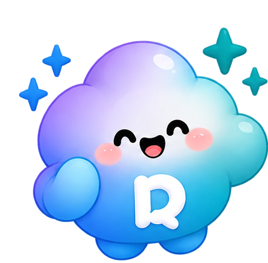
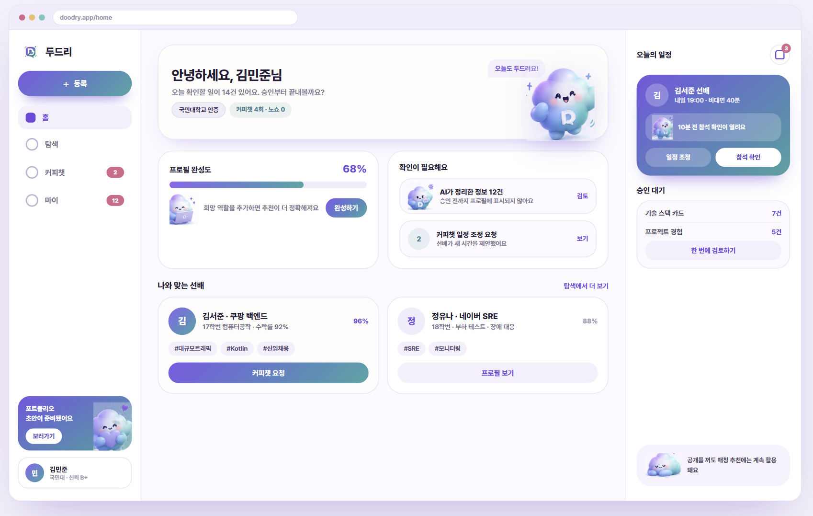
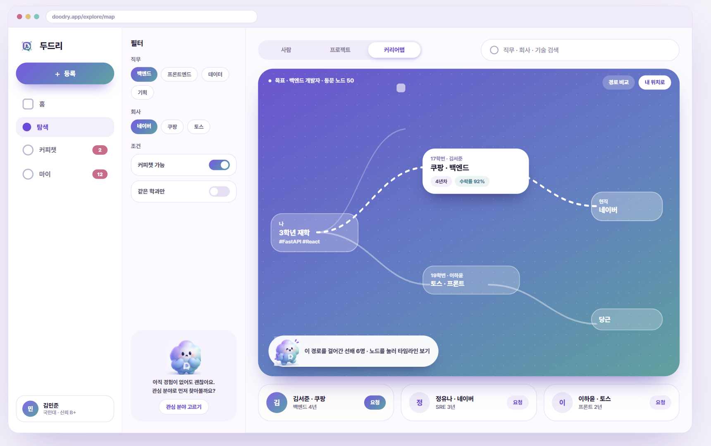
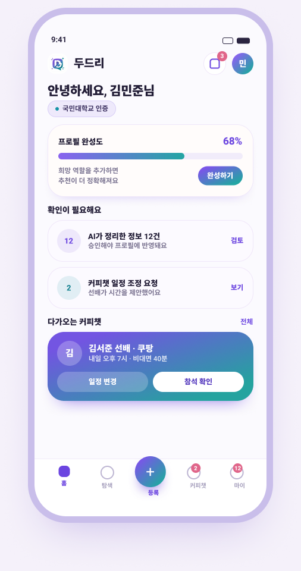
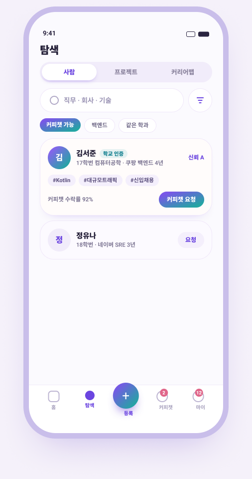
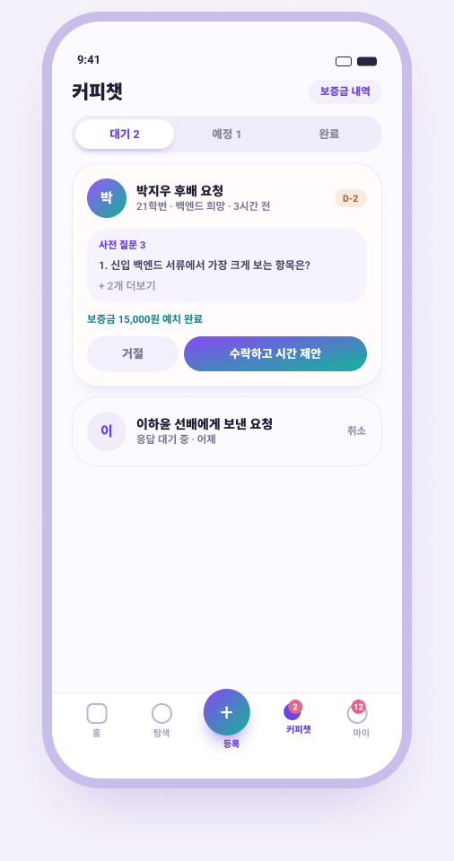
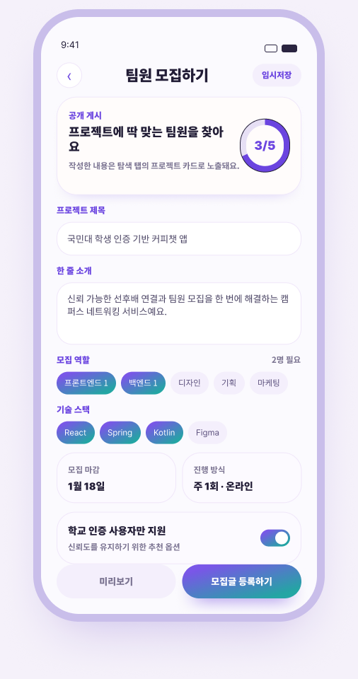
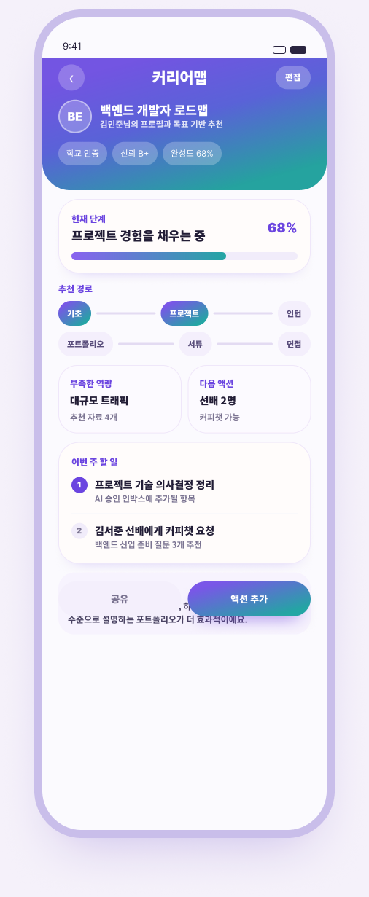

나✦
시작은, 지금의 나로 충분해요.
좋아하는 것과 해보고 싶은 것.
작은 관심사가 연결의 시작이 됩니다.
먼저 걸어간 선배와, 함께 걸어갈 동료.
작은 연결 하나가 나의 다음 이야기가 되는 곳.

안녕, 너의 가능성을 두드려봐!가장 가까운 연결에서
가장 새로운 기회로.
나의 경험, 선배의 발자국, 함께할 동료.
이 모든 이야기가 두드리 안에서 이어져요.


서비스 디자인 미리보기 · 화면 속 인물과 수치는 예시입니다.
좋아하는 것과 해보고 싶은 것.
작은 관심사가 연결의 시작이 됩니다.
먼저 걸어간 사람과, 함께 걸어갈 사람.
우리의 이야기가 만나는 순간.
쌓인 경험을 나다운 포트폴리오에 담아
더 넓은 세상으로 나아가요.
스크롤하거나 아래 장면을 선택해 두드리의 이야기를 따라가 보세요.
방향을 찾는 순간부터 나만의 결과물을 만드는 순간까지.
두드리가 다음 걸음을 함께해요.
나와 같은 교정을 걸었던 선배는
어떤 경험을 거쳐 지금의 자리에 도착했을까요?
관심 있는 분야의 선배와 그 여정을 발견해 보세요.
소프트웨어학부 · 백엔드 개발자
함께 코드를 쓰며 발견한 즐거움
Python함께 배우기아이디어를 실제 서비스로 만드는 경험
백엔드사이드 프로젝트첫 인턴을 준비할 때, 진로가 고민될 때.
비슷한 고민을 먼저 해본 선배와
편안한 대화로 나만의 힌트를 찾아보세요.
서로 가능한 시간을 골라요
만들고 싶은 건 있는데 함께할 사람이 없다면?
관심사와 목표가 맞는 동료를 만나
작은 아이디어에 첫 번째 실행을 더해보세요.
작은 불편함을 함께 해결할 동료를 찾습니다.
나의 프로필과 프로젝트가 포트폴리오로.
AI와 함께 초안을 만들고, 원하는 모습으로 다듬어
나만의 이야기를 세상에 보여주세요.
안녕하세요, 문제를 발견하고 해결하는 개발자 김지우입니다.
어디에 있든, 나의 다음 가능성과 가까워지도록.





서비스 디자인 미리보기 · 화면 속 인물, 수치 및 정책은 예시입니다.
대단한 경력도, 완성된 포트폴리오도 없어도 괜찮아요.
지금의 나에서 시작하면 되니까요.
학교 이메일을 인증하고
가까운 동문들과 연결될 준비를 해요.
경험이 없어도 괜찮아요.
관심 있는 분야와 하고 싶은 일을 들려주세요.
궁금했던 선배에게, 함께하고 싶은 팀에게.
먼저 가볍게 문을 두드려 보세요.
내 이야기는, 내가 결정해요. AI가 제안한 내용은 직접 확인하고 승인해요. 포트폴리오도 내가 게시할 때 공개돼요.
처음이라 궁금할 당신을 위해.
현재 국민대학교, 숭실대학교, 순천향대학교의 학교 이메일을 사용할 수 있는 분들이 시작할 수 있어요. 재학생부터 졸업생까지, 배우고 나누고 싶은 마음이 있다면 함께할 수 있어요. 학교 이메일 인증은 이메일 접근 여부를 확인하며, 재학·졸업 상태는 직접 입력해요.
물론이에요. 관심 분야, 배우고 싶은 기술, 함께하고 싶은 활동부터 소개해 주세요. 선배의 경험을 살펴보고, 처음 시작하는 사람도 참여할 수 있는 프로젝트를 찾아볼 수 있어요.
궁금한 경험을 가진 선배를 찾아 프로필을 살펴보고, 나의 소개와 나누고 싶은 질문을 담아 요청해요. 상대가 수락하면 서로 가능한 일정을 선택하고 대화를 준비할 수 있어요.
AI가 만든 내용은 먼저 초안으로 보여드려요. 내용을 직접 확인하고 수정·승인할 수 있고, 포트폴리오는 미리보기를 살펴본 뒤 게시 버튼을 눌러야 공개돼요.
네. 별도의 앱 설치 없이 모바일과 PC 브라우저에서 이용할 수 있어요. 프로필 작성, 동문 탐색, 커피챗, 프로젝트와 포트폴리오까지 같은 계정으로 이어서 사용해 보세요.